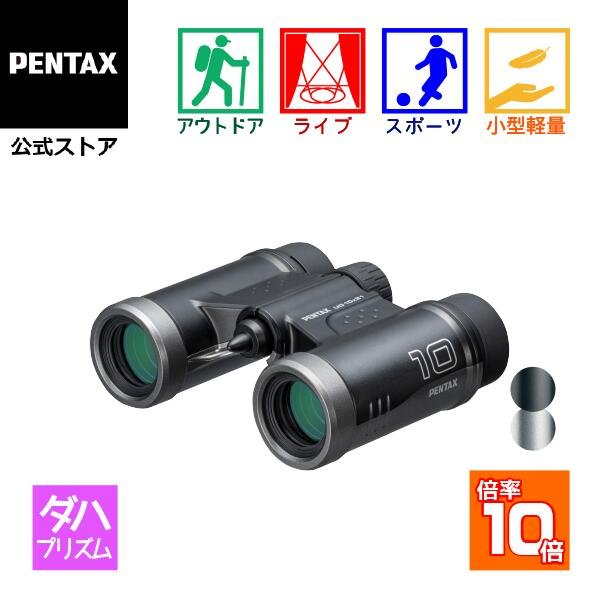
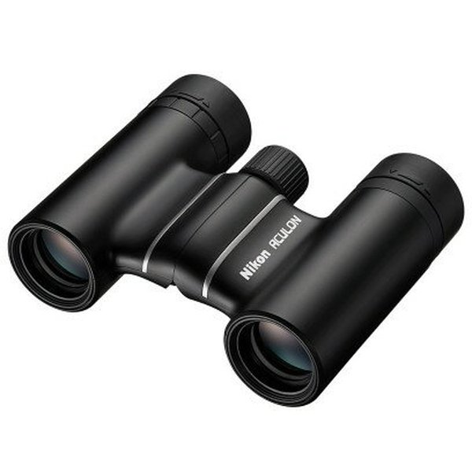
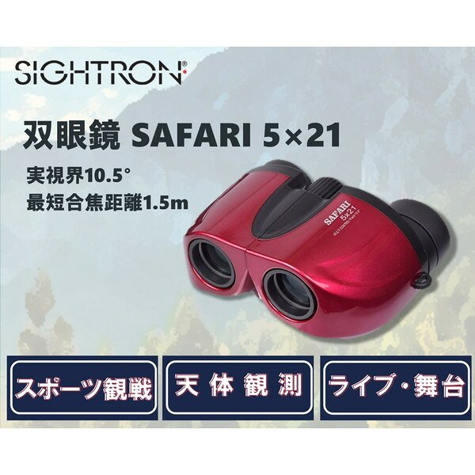
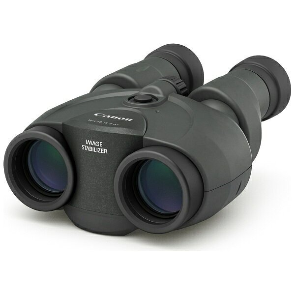
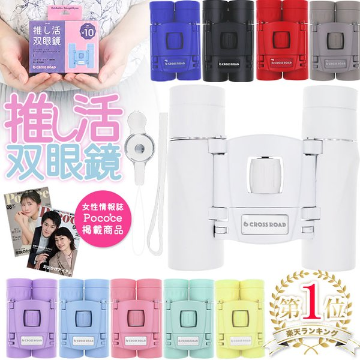
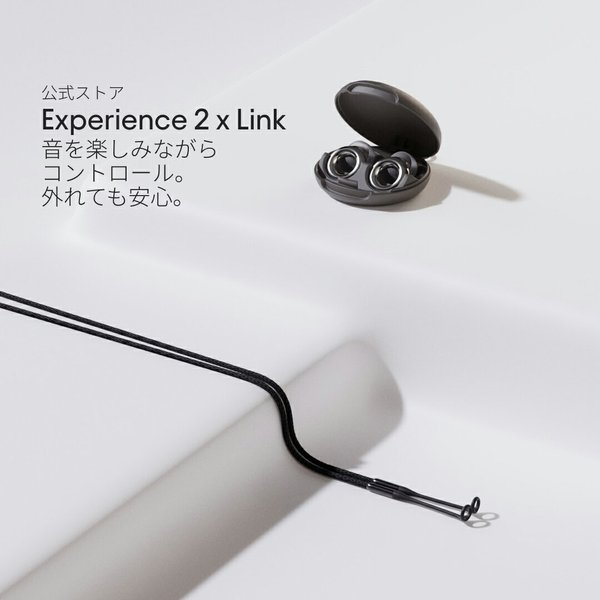
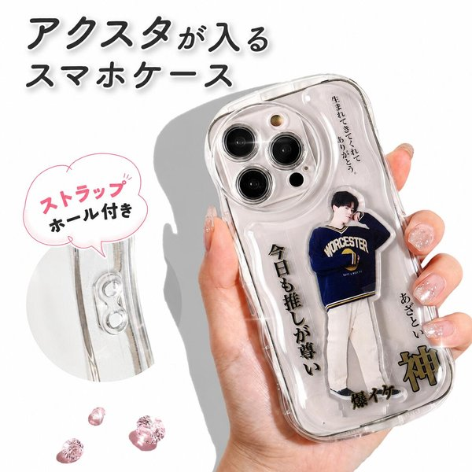
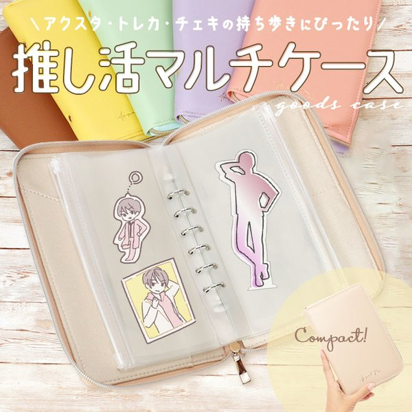
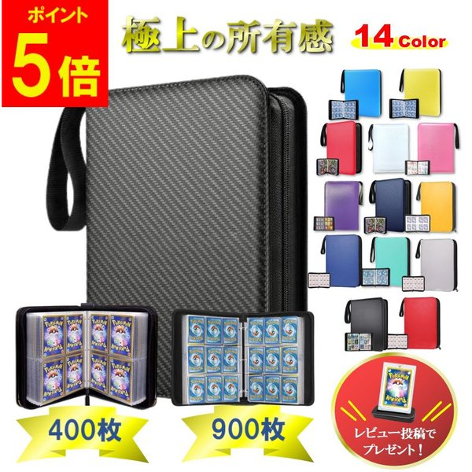

【2026年・ドームライブと推し活遠征】双眼鏡・防振双眼鏡・ライブ用耳栓・アクスタ収納10選｜ビクセン・ペンタックス・ニコン・サイトロン・キヤノン・Loopを実売価格で比較
ドームやスタジアムのライブは、席によって見え方がまるで違います。アリーナの後方や天井席だと、双眼鏡があるだけで「誰が歌っているか」が分かるようになります。遠征が増えるほど、荷物を増やさずに快適さを上げる道具が効いてきます。
選ぶ軸は3つです。「まず倍率と重さ」。8倍は手ブレしにくく視野が広い、10倍は遠くまで見えるが手ブレしやすい。会場の広さと席の位置で決めます。「次に耳」。ライブの音量は思っている以上に大きく、耳栓は聴力を守る装備です。減音しながら会話ができるタイプなら、待ち時間も困りません。「最後に推し活の収納」。アクスタやトレカを入れたまま持ち歩けるケースを選ぶと、遠征のバッグが軽くなります。なお、レビュー件数が少ない商品は記事内に実数を明記しています。
本記事では、楽天市場で人気・高評価のライブ双眼鏡・耳栓・推し活グッズ10選を、実売価格とレビュー評価つきで写真付き紹介します。
- おすすめ10選 スペック・特徴比較表
- BEST 1｜双眼鏡 アリーナ H+ 8x21WP
- BEST 2｜双眼鏡 UD 10x21
- BEST 3｜双眼鏡 ACULON T02 10x21
- BEST 4｜双眼鏡 SAFARI 5×21RD
- BEST 5｜防振双眼鏡 10×30 IS II
- BEST 6｜推し活双眼鏡 10倍 めがね対応
- BEST 7｜耳栓 Experience 2 + Link
- BEST 8｜アクスタ スマホケース シャカシャカ
- BEST 9｜推し活 アクリルスタンドケース マルチ
- BEST 10｜トレカファイル カードファイル 900枚収納
- 【読者負担0円】買わなくても得する無料サービス
- まとめ：ライブ双眼鏡と推し活遠征グッズ10選の選び方
| 順位 | 商品名 | ブランド | 最大の特徴・おすすめ理由 | 総合評価 |
|---|---|---|---|---|
| BEST 1 | 双眼鏡 アリーナ H+ 8x21WP | ビクセン（Vixen） | 8倍でドーム後方からでも表情が分かる | 4.73 |
| BEST 2 | 双眼鏡 UD 10x21 | ペンタックス（PENTAX） | 10倍で遠い席でも表情が分かる | 4.93 |
| BEST 3 | 双眼鏡 ACULON T02 10x21 | ニコン（Nikon） | 手のひらサイズで持ち歩きやすい | 4.55 |
| BEST 4 | 双眼鏡 SAFARI 5×21RD | サイトロン（SIGHTRON） | 実視界10.5度の広い視野 | 4.87 |
| BEST 5 | 防振双眼鏡 10×30 IS II | キヤノン（CANON） | 手ブレ補正で10倍でも像が安定 | 4.33 |
| BEST 6 | 推し活双眼鏡 10倍 めがね対応 | クロスロード（CROSS ROAD） | 手頃な価格で入門しやすい | 4.51 |
| BEST 7 | 耳栓 Experience 2 + Link | Loop（ループ） | 17dBの減音で音が割れにくい | 4.48 |
| BEST 8 | アクスタ スマホケース シャカシャカ | 竹下工房 | アクスタを入れたまま持ち歩ける | 4.41 |
| BEST 9 | 推し活 アクリルスタンドケース マルチ | Altrose（アルトローズ） | アクスタとトレカを一緒に収納 | 4.83 |
| BEST 10 | トレカファイル カードファイル 900枚収納 | DIAXINO | 900枚収納の大容量 | 4.76 |
双眼鏡 アリーナ H+ 8x21WP

ビクセンのアリーナ H+ 8x21WPは、コンサートや観劇向けに作られた8倍のコンパクト双眼鏡です。口径21mmで明るさは控えめですが、そのぶん軽く、ドームの席で長時間構えていても腕が疲れにくい設計。防水設計なので、屋外のスタジアムや雨の野外フェスでも安心して使えます。メーカー5年間保証付きで、くすみカラーのボディは推し色に合わせて選べます。楽天市場での実売価格は約8,890円（2026年11月時点）。
- 8倍でドーム後方からでも表情が分かる
- 防水設計でスタジアムでも使える
- メーカー5年保証付き
- レビューは11件と少なく、入門機より価格は高め
双眼鏡 UD 10x21

PENTAX UD 10x21は、国内メーカーの10倍ダハプリズム双眼鏡です。UDレンズで色にじみを抑え、クリアな見え方が特徴。ドームの天井席やスタンド後方からでも、顔の判別がしやすい倍率です。重さは200g前後で、ケースとストラップが付属します。10倍は手ブレが出やすい倍率ですが、両手で構えて肘を固定すれば実用範囲。公式店からの販売で保証も付きます。楽天市場での実売価格は約8,980円（2026年11月時点）。
- 10倍で遠い席でも表情が分かる
- 色にじみの少ないクリアな見え方
- ケースとストラップ付き
- レビューは15件と少なく、10倍は手ブレしやすい
双眼鏡 ACULON T02 10x21

ニコンのACULON T02は、手のひらに収まる10倍のコンパクト双眼鏡です。重さは200gほどで、バッグのポケットに入れておけるサイズ。多層膜コーティングで、室内の暗いステージでも像が沈みにくいのが利点です。眼鏡をかけたままでも使える折りたたみ式の接眼目当てで、遠征の荷物を増やしたくない人に向いています。ニコンの光学製品としては入りやすい価格帯です。楽天市場での実売価格は約9,400円（2026年11月時点）。
- 手のひらサイズで持ち歩きやすい
- 多層膜コーティングで暗所に強い
- 眼鏡のままでも使える
- レビューは11件と少なく、口径21mmなので夜の屋外は暗い
双眼鏡 SAFARI 5×21RD

サイトロンのSAFARI 5×21は、5倍の低倍率で視野が広い双眼鏡です。実視界10.5度と広く、ステージ全体を把握したいライブや、動きの速いスポーツ観戦に向いています。最短合焦距離が1.5mと短いので、手元のグッズや資料をのぞくのにも使えます。重さは200g前後で、ワインレッドのボディは推し色としても選びやすい。倍率より見える範囲の広さを優先したい人の選択肢です。楽天市場での実売価格は約8,280円（2026年11月時点）。
- 実視界10.5度の広い視野
- 最短1.5mからピントが合う
- 5倍で手ブレしにくい
- レビューは15件と少なく、5倍では遠い席の表情までは難しい
防振双眼鏡 10×30 IS II

キヤノンの10×30 IS IIは、手ブレ補正を内蔵した防振双眼鏡です。10倍という高倍率でも像がピタッと止まるので、ドームの天井席やスタンドの上段からでも文字や表情を追えます。口径30mmで明るく、室内の暗い舞台でも見えやすい。電池は単3形2本で、長時間の観劇でも予備を入れれば安心です。価格は高めですが、遠い席が多い人ほど効果を実感しやすい一台です。楽天市場での実売価格は約95,500円（2026年11月時点）。
- 手ブレ補正で10倍でも像が安定
- 口径30mmで暗い会場に強い
- 遠い席ほど効果が大きい
- レビューは9件と少なく、価格は気軽に買える範囲を超える
推し活双眼鏡 10倍 めがね対応

クロスロードの推し活双眼鏡は、コンサート用に作られた10倍のコンパクト双眼鏡です。眼鏡をかけたまま使える接眼目当てで、推し色に合わせられるカラー展開が特徴。軽量で、付属のストラップで首から下げたまま入場できます。価格は手頃で、初めてのライブ双眼鏡として選びやすい。楽天の口コミが7,400件以上集まっているのは、実際にライブで使った人の評価が積み上がっている証拠です。楽天市場での実売価格は約2,680円（2026年11月時点）。
- 手頃な価格で入門しやすい
- 眼鏡のまま使える
- 推し色から選べる
- 10倍のわりに軽いぶん、手ブレは自分で支える必要がある
耳栓 Experience 2 + Link

LoopのExperience 2は、ライブやフェスの音を小さくしながら、会話が聞き取れるように設計された耳栓です。17dBの減音量で、スピーカーの近くでも音が割れず、翌日に耳が残る感覚が続きにくい。セットのLinkは紛失防止用のコードで、外して首に下げられます。シリコン製で洗って繰り返し使え、2年保証付き。ライブの音量は年々大きくなっているので、遠征が多い人ほど1組持っておきたい装備です。楽天市場での実売価格は約8,580円（2026年11月時点）。
- 17dBの減音で音が割れにくい
- 紛失防止のLink付き
- 洗って繰り返し使える
- レビューは27件と少なく、装着感には個人差がある
アクスタ スマホケース シャカシャカ

竹下工房のアクスタスマホケースは、背面のポケットにアクリルスタンドを入れて持ち歩けるケースです。透明のシャカシャカ仕様で、推しのアクスタを入れたままスマホを使えます。iPhone用で、機種に合わせたサイズ展開。ストラップホール付きなので、ライブのときは首から下げられます。アクスタを別のポーチに入れる手間がなくなり、遠征の荷物を減らしたい人に向いています。楽天市場での実売価格は約1,280円（2026年11月時点）。
- アクスタを入れたまま持ち歩ける
- ストラップホール付き
- 透明で推しが見える
- 対応機種を確認しないと買い間違える
推し活 アクリルスタンドケース マルチ

Altroseのアクスタケースは、アクリルスタンドを持ち運ぶためのファスナー式マルチケースです。透明なケースにカードポケットが付き、アクスタとトレカを一緒に収納できます。ファスナーで閉じられるので、バッグの中で中身が飛び出しません。L判サイズのアクスタまで入る大きさで、ライブの待ち時間や遠征の移動中に開いて眺められます。推し活の収納を1つにまとめたい人に向いています。楽天市場での実売価格は約2,345円（2026年11月時点）。
- アクスタとトレカを一緒に収納
- ファスナーで中身が飛び出さない
- 透明で中身が見える
- レビューは6件と少なく、厚みのあるアクリルは入らない場合がある
トレカファイル カードファイル 900枚収納

DIAXINOのトレカファイルは、ポケモンカードやトレカを900枚まで収納できる大容量のバインダーです。リフィルが付属し、1冊でコレクションをまとめられます。外側はクッション性のある素材で、遠征のバッグに入れてもカードが折れにくい。リング式でページをめくりやすく、ライブ会場で交換するときも探しやすい。カードを集める人なら、1冊目として選びやすい定番の形です。楽天市場での実売価格は約1,750円（2026年11月時点）。
- 900枚収納の大容量
- クッション性のある表紙
- リング式でめくりやすい
- ページを増やすと重くなるので、持ち歩きは厳選する
この記事の商品を買う前に、まずは無料で得する選択肢をチェック。どれも登録・利用は0円で、無料期間中に解約すれば料金はかかりません。読みたい雑誌がある人、ポイントを貯めたい人、アンケートなら気軽という人、それぞれに合うものを選べます。
初回31日無料・無料期間中に解約すれば0円 → 楽天ポイントモール｜登録無料で毎日ポイ活
買い物なしでもポイントが貯まる無料サービス → 楽天インサイト｜アンケートに答えてポイント
登録無料・すきま時間のアンケートで貯まる → 楽天カード｜年会費永年無料
新規発行・年会費ずっと0円 →
4つのサービスの違いと使い分けは「出費0円で得する！買わずにポイントが貯まる無料サービス厳選4選」でまとめています。
💡 まとめ：ライブ双眼鏡と推し活遠征グッズ10選の選び方
ライブと遠征の道具は、見る・聴く・持ち運ぶの3つで考えると整理できます。見る道具は、まず8倍のビクセン アリーナ H+か、10倍でクリアなPENTAX UD 10x21。手のひらサイズで荷物を増やしたくないならニコンのACULON T02、ステージ全体を見たいなら5倍で視野の広いサイトロンのSAFARI、遠い席が多いなら手ブレ補正付きのキヤノン10×30 IS II。コスパ重視なら、口コミの多いクロスロードの推し活双眼鏡が入り口になります。耳はLoopのExperience 2で、減音しながら会話もできます。推し活の収納は、アクスタを入れたまま使える竹下工房のスマホケース、アクスタとトレカをまとめるAltroseのケース、カードを集めるならDIAXINOのトレカファイル。この順番でそろえると、遠征のバッグが重くなりません。
楽天市場では「5と0のつく日」や「お買い物マラソン」などのキャンペーンに合わせて購入すると、ポイント還元が最大化してお得に手に入ります。ぜひチェックしてみてくださいね。